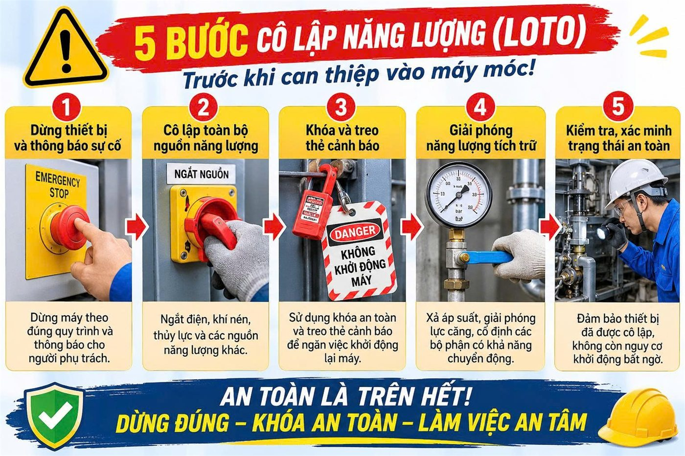
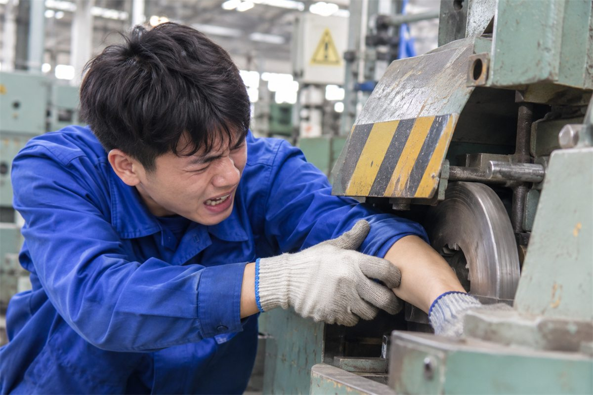

Quá trình sản xuất, tình huống dụng cụ, vật liệu hoặc chi tiết máy bị rơi, mắc kẹt bên trong thiết bị có thể xảy ra bất ngờ. Không ít người lao động có tâm lý muốn nhanh chóng lấy vật ra để tiếp tục công việc mà quên mất những nguy cơ tiềm ẩn từ các bộ phận máy móc đang chuyển động. Một thao tác thiếu thận trọng có thể dẫn đến tai nạn nghiêm trọng, ảnh hưởng trực tiếp tính mạng.
Tuyệt đối không đưa tay hoặc bất kỳ bộ phận cơ thể nào vào bên trong máy khi thiết bị vẫn đang vận hành hoặc chưa được cô lập hoàn toàn nguồn năng lượng.
Những nguy cơ tiềm ẩn khi xử lý vật mắc kẹt trong máy
Trong môi trường công nghiệp, nhiều thiết bị được cấu tạo từ các bộ phận chuyển động liên tục như bánh răng, trục quay, dây curoa, lưỡi cắt và hệ thống truyền động. Khi vật dụng rơi vào bên trong, việc tự ý đưa tay vào lấy có thể khiến người lao động gặp phải các tai nạn như cuốn, kẹp, nghiền hoặc cắt vào tay.
Đáng chú ý, nguy hiểm không chỉ xuất hiện khi máy đang chạy. Ngay cả khi thiết bị đã dừng, một số nguồn năng lượng vẫn có thể tồn tại dưới dạng điện, khí nén, thủy lực, lực đàn hồi hoặc quán tính của các bộ phận chuyển động. Nếu không được kiểm soát đúng cách, máy có thể bất ngờ khởi động hoặc chuyển động trở lại, gây mất an toàn cho người đang xử lý sự cố.
Cô lập năng lượng – Nguyên tắc quan trọng trước khi can thiệp vào máy móc
Để phòng ngừa tai nạn, người lao động cần tuân thủ quy trình cô lập năng lượng trước khi thực hiện các công việc kiểm tra, bảo trì, sửa chữa hoặc xử lý vật mắc kẹt trong thiết bị.
Quy trình này nhằm ngăn chặn việc cấp năng lượng và khởi động máy ngoài ý muốn trong thời gian có người đang làm việc tại khu vực nguy hiểm.
Các bước thực hiện cơ bản gồm:

- Bước 1: Dừng thiết bị và thông báo sự cố: Khi phát hiện vật mắc kẹt, cần dừng máy theo đúng quy trình vận hành, đồng thời thông báo cho người phụ trách để được hướng dẫn xử lý.
- Bước 2: Cô lập toàn bộ nguồn năng lượng: Ngắt các nguồn điện, khí nén, thủy lực và những nguồn năng lượng khác có liên quan đến hoạt động của thiết bị.
- Bước 3: Khóa và treo thẻ cảnh báo: Sử dụng khóa an toàn tại các điểm cô lập, treo thẻ cảnh báo để ngăn chặn việc người khác vô tình cấp nguồn hoặc khởi động máy trở lại.
- Bước 4: Giải phóng năng lượng tích trữ: Thực hiện xả áp suất, giải phóng lực căng, cố định các bộ phận có khả năng chuyển động và chờ máy dừng hoàn toàn.
- Bước 5: Kiểm tra, xác minh trạng thái an toàn: Người có thẩm quyền cần kiểm tra và xác nhận thiết bị đã được cô lập, không còn nguy cơ khởi động bất ngờ trước khi cho phép người lao động tiếp cận khu vực bên trong.
Cần lưu ý, nhấn nút dừng máy hoặc dừng khẩn cấp không đồng nghĩa với việc đã cô lập hoàn toàn nguồn năng lượng. Người lao động không được tự ý tháo gỡ vật mắc kẹt khi chưa được đào tạo, phân công và xác nhận đủ điều kiện an toàn.
Chủ động phòng ngừa, hạn chế tai nạn trong sản xuất
Bên cạnh việc tuân thủ quy trình cô lập năng lượng, mỗi người lao động cần hình thành thói quen kiểm tra thiết bị trước khi vận hành, sử dụng máy móc đúng hướng dẫn và không tự ý tháo bỏ các bộ phận bảo vệ. Khi phát hiện tiếng động bất thường, vật thể mắc kẹt hoặc dấu hiệu mất an toàn, cần dừng công việc và báo ngay cho người phụ trách.

Về phía doanh nghiệp, việc xây dựng quy trình vận hành an toàn, tổ chức huấn luyện định kỳ và trang bị đầy đủ phương tiện bảo hộ phù hợp với từng vị trí làm việc là những yếu tố cần được chú trọng. Đặc biệt, người lao động cần được hướng dẫn thực hành quy trình LOTO để có thể nhận diện và kiểm soát các nguồn năng lượng nguy hiểm trong quá trình sản xuất.
Tai nạn lao động đôi khi bắt nguồn từ những hành động tưởng chừng rất nhỏ như đưa tay lấy một chiếc cờ lê, mảnh vật liệu hay chi tiết bị mắc trong máy. Vì vậy, không nên chủ quan hoặc nóng vội khi xử lý sự cố.
An toàn lao động không chỉ là trách nhiệm của doanh nghiệp mà còn là ý thức và hành động của mỗi người lao động. Hãy dừng máy đúng quy trình, cô lập năng lượng và xác minh an toàn trước khi can thiệp vào thiết bị. Đừng vì tiết kiệm vài phút mà đánh đổi sức khỏe và tính mạng của chính mình.